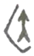
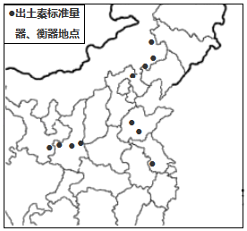
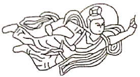
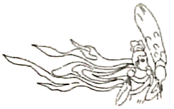

2020年北京市中考历史试题 · 选择题 第1、2、3、4、5题
1．2019年，北京平谷上宅遗址被列为全国重点文物保护单位。遗址中发现了大量陶器、磨制石器和半地穴式房屋遗存，这三类考古发现还出现在（ ）
A．元谋人遗址B．北京人遗址C．河姆渡遗址D．半坡遗址
2．如图是“医”字已知最早的写法，是用勾（医疗器具）将矢（箭）从人体上剔出，表示医疗。该字属于（ ）

A．甲骨文B．小篆C．隶书D．楷书
3．以下博物馆的名称来源于古代一项政治制度。这项制度是（ ）
名称 | 齐文化博物馆 | 晋国博物馆 | 西周燕都遗址博物馆 |
省份 | 山东 | 山西 | 北京 |
A．分封制B．郡县制C．科举制D．行省制
4．如图《全国出土秦计量器主要分布图》可用于研究秦朝（ ）

A．铁犁牛耕的推广B．巩固统一的措施
C．迅速灭亡的原因D．“推恩令”的实施
5．飞天是我国石窟艺术中最富舞蹈美感的形象之一，以下飞天形象的变化反映出（ ）
 大同云冈石窟中北魏早期的飞天舞姿雄健，具有游牧民族的审美特色 |  北魏迁都洛阳后开凿的龙门石窟中，飞天 的服饰、舞具都有中原汉风 |
A．书法艺术成熟B．北方民族融合
C．江南经济开发D．南北政权对峙